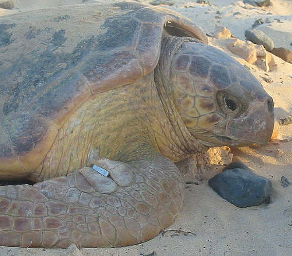

|
TAXONOMÍA DE LAS ESPECIES DE TORTUGAS ACTUALES
Jonathan González, 2007
En el presente artículo vamos a tratar
las diferentes familias de tortugas actuales, sus géneros y la
procedencia de éstas a través del registro fósil.
Elaborar un listado de todas las especies y subespecies
de tortugas actuales hubiera sido una tarea obsoleta a corto plazo, ya
que constantemente se hacen reformas en la clasificación de las
especies y subespecies, y la aparición de nuevas subespecies
necesitaría la constante actualización de la lista. Para evitar esto,
he preferido profundizar lo menos posible en las especies y
subespecies y centrarme en la evolución de las familias principales de
tortugas actuales hasta día de hoy.
Familia
Carettochelydae
El único componente del género es Carettochelys
insculpta, una peculiar tortuga que apareció en el Mioceno, en
Australia y Nueva Guinea. La C. insculpta, pertenecía
anteriormente a la subfamilia Carettochelynae, y compartía
familia con la subfamilia Anosteirinae, la cual contenía 19
componentes procedentes del Oligoceno y Eoceno. Otras formas europeas
del Eoceno son los géneros Allaeochelys y Acrochelys.
Carettochelys insculpta (Xavier Valls)
Familia
Dermatemydae
Es una de las familias más
antiguas que existen hoy en día. Antaño fue muy amplia, pero hoy su
único componente es Dermatemys mawi, una tortuga que habita en
los pantanos de los países centroamericanos de Belice, Guatemala y
sudeste de México. Todavía muestra una morfología muy peculiar.
La familia Dermatemydae es muy cercana a los
géneros Staurotypus y Claudius, de la familia
Kinosternidae. Un fósil del Oligoceno encontrado en
Norteamérica, perteneciente al género Xenochelys, es la forma
intermedia de estas 2 familias.
En Norteamérica, se han descubierto
varias familias procedentes del periodo Paleoceno: Adocus punctatus,
Basilemys sinuosa y Agomphus. Otros géneros
norteamericanos son Homorophus, Zygormamma, Compsemys,
Notomorpha, Anosteira, Pseudonosteira,
Kallistira y Alamosemys.
Durante el periodo Cretáceo también se
han descubierto géneros como Lindholmemys en Rusia,
Sinochelys en Asia, Tsaotanemys en China y Peltochelys
en Bélgica.
En hallazgos del Eoceno y Mioceno se
descubrió Trachyaspis procedente de Europa y África y
Paratenemys de Europa.
Familia
Platysternidae
Se trata de otra familia monotípica, que
cuenta con Platysternon megacephalum como único componente.
La Platysternon megacephalum es
una tortuga acuática, fácilmente reconocible por el gran tamaño de su
cabeza que no le permite guardarla en el interior de su caparazón.
Platysternon megalocephalum
(Toni Borrull)
Es una habitante de las zonas húmedas de
Vietnam, Birmania, y sureste de China.
Se han encontrado fósiles del periodo Cretáceo en
China, y otros del Plioceno (Macrocephalochelys pontica), pero
es el componente hallado en Rusia, en los hallazgos del Oligoceno (Planiplastron
tatarinovi), el más semejante a la Platysternon
megacephalum
viviente.
Familia
Chelydridae
La familia Chelydridae, es una
familia compuesta por 2 géneros, de una especie cada uno: Chelydra
serpentina, que se distribuye por el sur de EE.UU. México y
Centroamérica, y Macroclemys temminckii, conocida como tortuga
aligator. Se trata de una gigantesca tortuga habitante de los
pantanos estadounidenses.
Chelydra serpentina (Nuhacet
Fernández )
Las primeras Macroclemys se descubrieron en
hallazgos del periodo Mioceno, como la Macroclemys
schmidtii y Acherontemys hecmanni.
M. auffenbergi procedente del Plioceno y el género
Hoplochelys del Terciario.
Las más recientes son las formas del
Eoceno, Gafsachelys, Cheydrops y Chelydrospis.
Familia
Cheloniidae
La familia
Cheloniidae se divide en 2 subfamilias:
Cheloniinae con
3 especies: Chelonia mydas, Eretmochelys imbricata y
Natator depressus.
Carettinae
con: Caretta caretta, Lepidochelys kempii y L.
olivacea.
Se han
encontrado registros procedentes del periodo Plioceno de la especie
Chelonia sismondai, la cual presenta mucha relación con las
actuales Chelonia mydas.

Caretta
caretta (Foto:
Nuhacet Fernández )
Familia
Dermochelydae
La Dermochelys coriacea, es el
único componente de esta familia, y se trata de la tortuga viviente
más grande, llegando a alcanzar los 200 cm. de longitud.
Es habitante de los mares tropicales. Su
cuerpo, al contrario de las otras tortugas marinas, esta recubierto de
una piel coriacea, hecho por el cual es conocida como tortuga de
cuero.
La D. coriacea apareció en
el Mioceno, mientras que los demás componentes de la familia vivieron
en el Eoceno (Psephophorus y Eosphargis gigas).
Familia
Emydidae
Actualmente la familia Emydidae
esta dividida en 2 subfamilias: Emydinae y Deirochelynae.
La subfamilia Emydinae engloba los componentes de los géneros
Actinemys, Clemmys, Terrapene, Emydioidea y
Emys.
Derochelynae, agrupa a todos los componentes de los géneros
Deirochelys, Graptemys, Malaclemys, Pseudemys,
Chrysemys y Trachemys, todos ellos distribuidos en
Norteamérica, Mesoamérica, y algunas islas de las Antillas.
Las formas ancestrales de las tortugas
del género Terrapene se encuentran en las formas T. ornata
longinsulae (Plioceno y Pleistoceno) y la T. carolina putnami
procedente de los periodos Plioceno y Pleistoceno y son similares a
una T. carolina major.
Terrapene carolia major (Txema
López)
Entre los Deirochelynae, se han
descubierto las especies Trachemys scripta inflata, ancestro de
las T. scripta actuales. En el género Pseudemys el
ancestro común del género es la forma del Eoceno Echmatemys,
siendo la especie Pseudemys platymarginata del Pleistoceno el
ancestro común de las especies P. rubriventris y P. nelsoni.
Trachemys scripta elegans (Foto:
Jonathan González)
Familia
Bataguridae
La familia
Bataguridae, está compuesta al igual que en Emydidae por 2
subfamilias: Batagurinae y Geoemydinae. La subfamilia
Batagurinae esta compuesta por 13 géneros: Batagur,
Callagur, Kachuga, Pangshura, Hardella,
Siebenrockiella, Orlitia, Ocadia, Chinemys,
Geoclemys, Hieremys, Morenia y
Malayemys.
Geoemydinae está
compuesta de 13 géneros: Annamemys, Cuora,
Cistoclemys, Cyclemys, Heosemys, Leucocephalum,
Melanochelys, Notochelys, Pyxidea, Sacalia,
Mauremys, Rhinoclemmys y Chelopus.
El género
Broilia vivió durante el periodo Oligoceno en Francia, y estaba
compuesto por al menos 4 especies. Durante el Oligoceno y Plioceno
vivió también el género Palaeochelys en Europa y Mongolia. Los
componentes del género eran similares a las especies actuales de los
géneros Geoemyda y Ocadia, por lo que se cree que puede
ser el ancestro de estas dos subfamilias.
Geoemyda spengleri (Manuel
Romero)
Ocadia sinesis
(Enric Pàmies)
Familia
Kinosternidae
La familia Kinosternidae se
compone de 2 subfamilias.
La subfamilia Kinosterninae
engloba 2 únicos géneros: Kinosternon y Sternotherus,
siendo el primero de estos el más numeroso.
La subfamilia Staurotypinae,
también engloba dos géneros: Claudius y Staurotypus.
Staurotypus salvinii
(Marcelo López)
El registro fósil del género
Kinosternon es muy escaso. Únicamente se conoce Kinosternon
arizonense, procedente del periodo Oligoceno y descubierto en el
Sur de Dakota.
El género Xenochelys vivió en el
Oligoceno, y tiene características intermedias entre Dermatemydae
y Staurotypinae.
Familia
Testudinidae
La familia
Testudinidae esta dividida en las subfamilias Testudininae
y Xerobatinae.
La subfamilia
Testudininae comprende los géneros Geochelone,
Asterochelys, Chelonoidiis, Centrochelys,
Stigmochelys, Acinixys, Agrionemys, Testudo,
Pixys, Aldabrachelys, Chelonoidiis, Homopus,
Chersina, Psammobates, Indotestudo,
Pseudotestudo y Kinixys.
Xerobatinae
comprende los géneros Manouria, Xerobates y Gopherus.
Las especies más
ancestrales de esta familia son las de los componentes del género
Manouria, que aparecieron en el periodo Eoceno.
Manouria emys
(Paddy Ryan -
www.ryanphotographic.com)
Durante el Mioceno
y el Oligoceno aparecieron especies como Stylemys capax,
S. calaverensis, S. conspecta, S. oregonensis,
S. botii, S. canetotiana, S. frizaciana, S.
pygmea, S. karakolensis y S. nebraskensis, las que
posiblemente fueran las formas ancestrales de las Gopherus
actuales.
Gopherus
berlandieri
En India se
encontraron formas del Pleistoceno como Geochelone cubensis,
G. sombrerensis, G. nevassae, G. monensis y las
tortugas del género Monachelys.
En Norteamérica se
encontraron fósiles de especies como Hesperotestudo osborniana,
H. impensa, H. augusticeps, H. orthopygia, H.
pertenuis, H. turgida, H. equicomes, H. wilson,
H. incisa y las especies Manouria amphithorax y M.
brontops, además del género Caudachelys y las especies del
género Geochelone: G. ligonia, G. tedwithei,
G. hayi, G. rexroadensis, G. laticaudata, G.
crassicutata, G. louisekressmani. Otros fósiles
norteamericanos son los géneros Floridemys, Cymatholcus,
Achilemys, Cheirogaster, Colosoemys,
Sinohadricus.
En la zona de
América tropical se encontró la Geochelone costaricensis y
G. gringorum, posiblemente las primeras formas ancestrales de
G. chilensis.
G.
hesterna es una
forma colombiana del periodo Mioceno, que muestra características
intermedias entre las G. carbonaria y la G.
denticulata
vivientes.
Geochelone
chilensis (Marcelo
López)
Geochelone carbonaria (Jonathan González).
En el contintente
asiático encontramos las antiguas Asterochelys del Eoceno:
Asterochelys ammon, procedente de Egipto. En India, Java,
Timor, y en Sulawesi, habitaba la especie Megalochelys sivalensis
= Colossochelys atlas. En Mauritus se ha encontrado la forma
del Pleistoceno Megalochelys gadowi.
El género
Testudo es uno de los más numerosos en cuanto a registro fósil se
refiere.
Chkikvadze (1970b)
propone la forma Protestudo como el ancestro de las Testudo.
En el género Protestudo se incluirían las especies: hermanni,
hippariorum, honanensis, hypercostata, antigua,
aralensis, bessarabica, kalksburgensis,
kegenica, oskarkuhni, promarginata, schansiensis,
schensiensis, sphaerica, szalai, tunhuanensis,
turgaica y yushensis. Según Chkikvadze
Protestudo es el ancestro de Agrionemys y Testudo,
mientras que Ergilemys procedente del Mioceno, es el ancestro
de Protestudo, Geochelone, Indotestudo y
Testudo.
Cheylan (1981)
propone las especies Testudo szalai del Plioceno como ancestro
común de Testudo hermanni, mientras que el ancestro común de
las Testudo graeca actuales sería la especie del Plioceno
Testudo antiqua.

Testudo
hermanni (Francisco Sánchez)
El género
Dipsochelys también contiene especies extintas como la malgache
D. grandidieri, D. sumeirei (Seychelles), D. goffei. Aldabra era
habitada por D. dussumieri, la cual actualmente sigue
habitándola, D. elephantina (difiere de dussumieri, por
que elephantina tiene un solo escudo supracaudal), D.
ponderosa, y D. daudinii.
D.
hololissa., se
ha redescubierto y solamente hay 16 ejemplares localizados por
zoológicos de alrededor del mundo.
El género
Cylindraspis, fue un género de tortugas que desaparecieron por el
año 1800.
Las especies de
este género son: C. vosmaeri, C. peltastes, C.
commersoni, C. rodericensis (habitaron en Rodríguez), C.
indica (Reunión), C. inepta, C. leptocnemis, C.
triserrata, C. gadowi (Mauritus), C. microtympanum,
C. sauzieri, C. grayi, C. tabulata (orígenes
desconocidos).
Las tortugas
gigantes de las Galápagos actuales (Geochelone nigra) también
cuentan con 2 subespecies extintas: G. nigra nigra de la isla
Floreana y G. n. phantastica de la isla Fernandina. También
existe un macho solitario de G. n. abingdoni de isla Pinta, la
cual se podría considerar también extinta. Otras de ellas estuvieron
al borde de la extinción debido al saqueo de las islas por parte de
los marineros sobretodo durante los siglos XVII, XVIII y IX, que
utilizaban su carne como alimento.
Geochelone
nigra porteri (Jordi Hernández)
Familia Trionychidae
La familia Trionychidae,
esta dividida en 2 subfamilias: Cyclanorbinae y Trionychinae.
Anteriormente la subfamilia
Trionychinae solo contaba con 3 géneros: Chitra,
Pelochelis y Trionyx. Actualmente sus especies se
encuentran separadas en 11 géneros: Apalone, Amyda,
Dogania, Nilsonia, Aspideretes, Palea,
Rafetus, Pelodiscus y Trionyx, Chitra y
Pelochelis ya descritos.
La subfamilia Cyclanorbinae
contiene los géneros: Lissemys, Cycloderma y
Cyclanorbis, con 2 especies descritas cada uno.
Apalone ferox (www.serpentarium.be)
Las Trionychidae
aparecieron en el Cretáceo y son unas de las tortugas más antiguas.
Sinaspideretes wimani
es el fósil más antiguo encontrado y procede de finales del Jurásico.
Durante el Cretáceo y el Eoceno, habitaba el género Plastomenus,
con 11 especies encontradas en Norteamérica, excepto la forma del
Eoceno P. mlynarski, que se encontró en Kazajstán.
También se han encontrado ancestros del
género Chitra en Java, y fragmentos de Pelochelis en el
norte de Australia.
En lo referente a los Cyclanorbinae,
existen fósiles de la especie Cycloderma victoriae, del este de
África, procedente del Mioceno.
También 3 ancestros de Lissemys
del Plioceno se han encontrado en la península índica.
Familia
Chelidae
La familia
Chelidae está dividida en 2 subfamilias: Chelinae y
Pseudoemydinae. Esta última con Pseudoemydura umbrina como
única representante del género. P. umbrina es una de las
especies de tortuga más escasas del mundo, encontrándose una única
población muy pequeña cerca de Perth (Australia).
La subfamilia
Chelinae comprende los géneros Acanthochelys,
Batrachemys, Bufocephala, Chelus, Hidromedusa,
Mesoclemys, Phrynops, Platemys, Ranacephala,
y Rhinemys (Sudamérica), y Chelodina, Elseya,
Emydura, Elusor, Macrochelodina, Rheodytes
(Australia y algunas islas del Archipiélago del sudeste asiático). El registro fósil
de esta familia es muy escaso. Únicamente se han encontrado fósiles de
los géneros Pelocomtastes en Australia, y Parahydraspis
en Sudamérica.
Chelodina mccordi (Nuhacet
Fernández)
Chelus fimbriatus (Nuhacet Fernández)
Familia Pelomedusidae
La familia
Pelomedusidae comprende 2 subfamilias.
Pelomedusinae,
con 2 únicos géneros: Pelomedusa y Pelusios, ambos
distribuidos en su totalidad por el continente africano.
La subfamilia
Podocneminae se distribuye por el continente sudamericano a
excepción de Erymnochelys madagascariensis que habita en la
isla de Madagascar. En Sudamérica habitan 2 géneros. Peltocephalus,
con una única representante: P. dumerilianus, y Podocnemis,
con 6 especies.
Según el registro
fósil encontrado del género Pelusios revela que el género ha
sufrido poca evolución en sus especies desde su aparición. Los fósiles
encontrados corresponden a las especies Pelusius dewitzianus y
P. blackenhorni, del Plioceno y Mioceno, procedentes de
Egipto.
Pelusios subniger
(Jonathan González)
Otro hallazgo fósil
del Oligoceno en Egipto es Pelomedusa progaleata, el ancestro
común de la Pelomedusa subrufa actual.
El registro fósil
revela que una de las especies más antiguas del género Podocnemis
es la especie Podocnemis elegans procedente de Brasil
En Sudamérica
también han sido encontrados fósiles de Podocnemis brasilensis,
P. elegans, P. harrisi de finales del periodo Cretáceo,
P. venezuelensis de mediados del Plioceno y P. bassleri
del Terciario.
Los registros
fósiles del periodo Mioceno en África, más exactamente en Egipto son
las especies Podocnemis aegyptiaca y P. bramlyi. En
Egipto también se han encontrado fósiles del Oligoceno de P.
fajumensis y P. stromeri del Eoceno.
También ha
sido hallado registro fósil del Eoceno en Inglaterra (P. bowerbanki)
y en India (P. indica).
|
ERA |
SUB-ERA |
PERIODO |
EDAD APROX. |
NOTAS |
|
CENOZOICO |
Cuaternario |
Holoceno |
10.000 |
Aparece el ser humano
4 eras de hielo |
|
Pleistoceno |
2.500.000 |
|
Terciario |
Plioceno |
12.000.000 |
Comienza el
enfriamiento de la tierra. |
|
Mioceno |
26.000.000 |
|
Oligoceno |
38.000.000 |
|
Eoceno |
54.000.000 |
En este periodo la
tierra era muy caliente. En los polos habían palmeras y cocodrilos |
|
Paleoceno |
65.000.000 |
|
MESOZOICO |
|
Cretácico |
136.000.000 |
Era de los
Dinosaurios.
El continente Pangea
comienza a dividirse |
|
Jurásico |
195.000.000 |
|
Triásico |
225.000.000 |
|
PALEOZOICO |
|
Pérmico |
280.000.000 |
Primeras formas de
vida multicelular.
Se forma el
continente Pangea |
|
Carbonífero |
320.000.000 |
|
Devónico |
395.000.000 |
|
Silúrico |
430.000.000 |
|
Ordovício |
500.000.000 |
|
Cambrico |
570.000.000 |
Periodos de la
tierra (Ventanas del Universo)

Situación de los
continentes en la Tierra:
Arriba izquierda:
Paleozoico
Arriba derecha:
Mesozoico
Abajo izquierda:
Terciario
Abajo derecha:
Cuaternario
(Foto:
Ventanas del
Universo)
Bibliografía
AUFFENBERG, W., 1974:
Checklist of fossil land tortoises (Testudinidae). Bull.
Florida State.
CHKIKVADZE, V.M,
1970b: Klassifikatsiya Podlassa Testudinat. 16th Annual
Session, Inst. Palebiology. 10-11 Dec.
1970. Tesis Dokladov: 7-8.
HARLESS, M. &
MORLOCK, H., 1989: Turtles: Perspectivas & Researchs.
Krieger Publishing Company.
MERCHÁN, M. 1992:
El Maravilloso Mundo de las tortugas. Ed. Antiqvaria S.A. Madrid
PRITCHARD, P.C.H.
1970: Encyclopedia of Turtles. T.F.H. Publications. New Jersey.
VENTANAS AL UNIVERSO: Windows to the Universe, de
University Corporation for Atmospheric Research (UCAR). ©1995-1999,
2000 Los Regentes de la Universidad de Michigan; ©2000-06 University
Corporation for Atmospheric Research. Todos los Derechos son
Reservados.
|